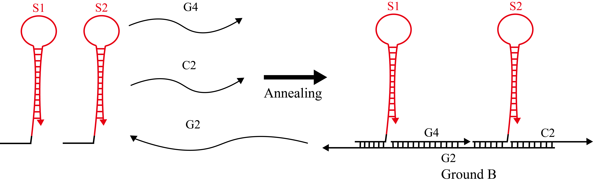
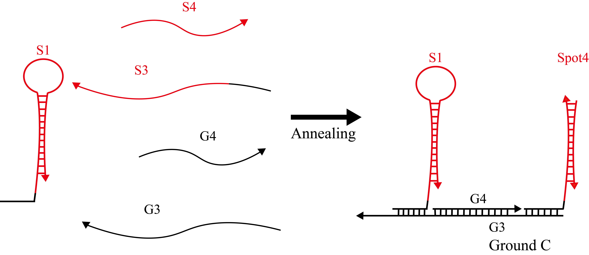

Simulation Condition
We set the binding rate constant (kf) based on toehold length as follows [1,2].
If toehold_length ≤ 6
kf = 5.0×10n-1 [M-1s-1]
else
kf = 3.0×106 [M-1s-1]
Where
n : toehold_length
Type & Strands
Walker
The Walker is composed of annealed W1 and W2, which are single DNA strands.

Figure 1:Structure of DNAwalker
| Name | Base sequences (5'→3') |
|---|---|
| W1 | CCCTAAACTAAACATTACTAACTTATCCTTTTGCCTCGTATCCTAACCGAACGGACTCCAGGACATCACACGCTCAATCACCACCT |
| W2 | CCCTAAACTAAACATTACTAACTTATCCTTGTCCGTTCGGTTAGGATACGAGGCAATCCAGGACATCCTCACGCTCAATCAGCACCT |
Ground A
Hairpins S1 and S2 were mixed with single strands C1, G1, and G4, and subsequently annealed to produce Ground A.

Figure 2:Structure of Ground A
| Name | Base sequences (5'→3') |
|---|---|
| S1 | GGTAGTTCTAGGGTGCTGAGGTGGTGATTGAGCGTGTGATGTCACCACGTCTTCTCGCATCACACGCTCAATC |
| S2 | CACCTCGGATCTTGATGGAGGTGCTGATTGAGCGTGAGGATGTCAGCACCTCAACTCGCATCCTCACGCTCAATC |
| G1 | TCATAGGCACCGTTCAAGATCCGAGGTGAGTGCATAGATAGTCATAGCCTTGGACCACCCTAGAACTACCT |
| G4 | GTCCAAGGCTATGACTATCTATGCACT |
| C1 | ACGGTGCCTATGACATGGTACTCAGCT |
Ground B
Hairpins S1 and S2 were mixed with single strands C2, G2, and G4, and then annealed to produce Ground B.

{kind=link}
Figure 3:Structure of Ground B
| Name | Base sequences (5'→3') |
|---|---|
| G2 | TACCATGAGTCGATCAAGATCCGAGGTGAGTGCATAGATAGTCATAGCCTTGGACCACCCTAGAACTACCAGCTGAGTACCATG |
| C2 | TCGACTCATGGTACAGTATCCGTGGCA |
Ground C
Hairpin S1 and single strands S3, S4 were mixed with single strands G3 and S4, and then annealed to produce Ground C.

{kind=link}
Figure 4:Structure of Ground C
Ground
Ground A, B, and C were incubated at room temperature for 5 hours to produce Ground.

Figure 5:Structure of Ground
Walker & Ground A
Ground A and the pre-assembled Walker were incubated at room temperature for 2 hours to produce Walker & Ground A.

Figure 6:Structure of Walker & Ground A
Fuel
Fuel is made of annealed F1 and F2, which are single DNA strands.

Figure 7:Structure of Fuel
| Name | Base sequences (5'→3') |
|---|---|
| F1 | TGTGAAGCGAGAACTCGTGGTGAGATGTCTCCCTCAATCAGCACCTCAACTCGCATCCTCA |
| F2 | TGAGGATGCGAGTTGAGGTGCTGACATCCTCACGCTCAATCAGCACCTCAACTCGCA |
DNA Walker experiment
Sample preparation
Step 1 Dilution
We diluted each strand to 10 μM in Tris-EDTA buffer supplemented with 12.5 mM MgCl2. The experiment was performed at 20°C.
Step 2 Annealing
We annealed DNA samples in the following three conditions to determine the optimal annealing conditions. We heated the mixture at 95°C for 5 minutes and slowly cooled it to 20°C for 1, 5, and 10 hours with a thermal cycler(Figure 8).

Figure 8:Thermal cycler
Electrophoresis
① The gel was set on an electrophoresis chamber.
② Samples (10 μL) and loading dye (2 μL) were mixed.
③ Each sample (10 μL) was added to wells and 150 V was applied for approximately 80 minutes.
④ Gels were taken out of wells and stained using a DNA staining solution for 30 minutes.
⑤ Fluorescence was observed using a gel imager(Figure 9).

Figure 9:Electrophoresis chamber

Figure 10:Gel imager
Material
Materials were purchased from the companies indicated below.
| Material | Name | Company |
|---|---|---|
| Poly-Acrylamide Gel | e-PAGEL | ATTO, JAPAN |
| TBE Buffer | WSE-7051EzRunTBE | ATTO, JAPAN |
| Loading dye | Gel Loading Dye Purple (6×) B7024S | BioLabs, JAPAN |
| DNA stain | GelGreen Nucleic Acid Stain 10,000× DMSO (0.5 mL) | Biotium, USA |
| DNA ladder | Low Molecular Weight DNA | BioLabs, JAPAN |
Equipment
Equipment was purchased from the companies indicated below.
| Equipment | Name | Company |
|---|---|---|
| Electrophoresis chamber | AE-y530MW | ATTO, JAPAN |
| Thermal cycler | GeneAtlas(ASTEC325) | ASTEC, JAPAN |
| Gel imager | GELSCAN-2 | iMeasure, JAPAN |
[1] D. Zhan and E. Winfree: Control of DNA strand displacement kinetics using toehold exchange, J. Am. Chem. Soc., Vol. 131, pp. 17303-17314, 2009.
[2] S. Kobayashi, K. Yanagibashi, K. Fujimoto, K. Komiya and M. Hagiya: Analog DNA computing devices toward the control of molecular robots, Workshop on Self-organization in Swarm of Robots: from Molecular Robots to Mobile Agents (WSSR 2014), Nara, October, 2014.
[2] S. Kobayashi, K. Yanagibashi, K. Fujimoto, K. Komiya and M. Hagiya: Analog DNA computing devices toward the control of molecular robots, Workshop on Self-organization in Swarm of Robots: from Molecular Robots to Mobile Agents (WSSR 2014), Nara, October, 2014.
© YOKABIO 2017